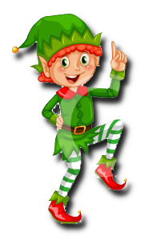
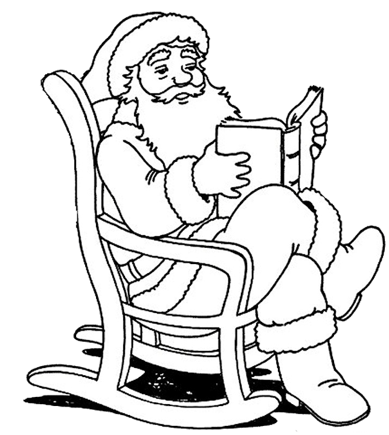

|
Er is ondertussen alweer een kleine maand voorbij. Sinterklaas en de Kerstman zijn terug naar huis. Eppi (13 jaar) en Immi (7 jaar) spelen samen met hun allernieuwste speelgoed.
De mond van Immi staat niet stil. Honderduit babbelt ze een heeft ze vragen. Haar geduldige oudere broer, Eppi, legt haar alles uit. “De Kerstman woont op de Noordpool, nietwaar?” ”Ja, hij woont op de Noordpool.” “Zeg Eppi, waar haalt hij al dat speelgoed?” “Dat maken de Elfen allemaal gedurende het jaar.” “Die hebben dan veel werk hé! Eppi, hoeveel Elfjes heeft de Kerstman?” “Hij heeft het hele jaar door zo’n duizenden Elfjes, maar die werken met periodes in de fabrieken. Zoals onze tante Arlette. Zij werkt in het ziekenhuis, in ploegendienst. Je weet toch dat zij soms niet feestjes kan komen, dan moet zij de zieken verzorgen, zo is dat ook bij de Elfjes, maar zij maken speelgoed. Er zijn er altijd zo’n drieduizend Elfjes aanwezig. Zij blijven voor altijd die op de Noordpool. Je hebt vijf opperelfen die de andere elfen hun taken geven. Meer als honderdduizend Elfen gaan nooit naar de Noordpool, die blijven hier bij ons omdat het hier warmer is.
“Zijn dat de acht grote bazen?” “Acht?” “ Zijn Vrouwtje Kerst en de burgemeester er dan ook?” “Neen, zij tellen niet mee. Er zijn maar vijf Elfen en zij zitten heel dikwijls in vergadering. Dat zijn er dan zes, als je de Kerstman meerekent. Dus kun je wel zeggen er vijf Opperelfen zijn.” “Wat moeten die allemaal doen?” Enkel Spencer, dat is de allerbelangrijkste Hoofdopperelf: hij is de baas van de speelgoedfabriek en alle andere fabrieken. Hij moet ook nog zorgen dat alle Elfen om 8.00 uur in bed liggen en dat ze iedere dag eten krijgen. De anderen zijn ook wel belangrijk en zij moeten luisteren naar Spencer als de Kerstman er niet is. Dat is zoals bij jou in school: je hebt mevrouw Steels, dat is de directrice en mevrouw Peters is de onderdirectrice. Als mevrouw Steels er niet is, moet je naar mevrouw Peters gaan. Zo is dat ook bij de Elfen. Als de Kerstman er niet is, dan moeten ze naar Spencer gaan. Snap je?” “Eppi, denk jij dat ik dom ben! Wie verzorgt de rendieren?”
“Luister Immi, Chase zorgt voor de negen rendieren. Trouwens, juffrouwtje, ken jij de namen van de rendieren?” “Natuurlijk ken ik die, die hebben we in school geleerd. Dat zijn: Dassher en Dancer, Prancer en Vixen, Comet en Cupid, Donder en Blitzen. En nadien is Rudolf erbij gekomen omdat hij een rode neus heeft en vooraan loopt.”
“Goed zo zusje, maar nu verder over de Elfen. Je mag mevrouw Claus, of zoals jij het zegt vrouwtje Kerst, niet vergeten. Zij zorgt heel goed voor haar man. Maar hij moet ook wel naar haar luisteren. Vrouwtje Kerst vindt dat haar man een veel te dikke buik heeft en teveel koekjes eet, maar hij mag zeker niet dikker worden, dat is ongezond.” “Ah ja, dat is zoals mama en papa, papa moet ook luisteren naar mama als het over eten gaat. Eppi, hoe zien Elfen eruit?” “Immi, dat moet ik op het internet zoeken. Daar zal ik wel een afbeelding van één van de duizenden Elfen vinden.”
Even later komt Eppi terug met een afbeelding. “Kijk Immi, alle elfen zijn in het groen gekleed, hebben een groene kousenbroek, een groene puntmuts en rode schoenen. Maar stel dat ze gewone kleding dragen, dan zie je nog dat het een Elf is.” ”Hoe komt dat?” “Kijk eens naar hun oren en voeten.” “Oh ja, nu zie ik het. Dat zijn wel lieve Elfen hé, Eppi.” “Jazeker, wijsneus.”
“Heeft de Kerstman ook kinderen?” “Niet dat ik weet, sommigen zeggen dat ze een zoon hebben, anderen zeggen dat ze een dochter hebben. Niemand weet het. Hij en zijn vrouw willen alle kinderen en ook ouderen over de hele wereld blij en gelukkig maken.”
“Welke taal spreekt de Kerstman?” “Hij spreekt het Sindarijns, dat is de taal van de gewone elfen die op aarde leven en heeft ook een bijzondere eigenschap. Het klinkt voor ieder mens en ieder dier bijna net zo als zijn eigen taal. Daarom kan iedereen hem verstaan en kan iedereen met hem praten.”
“Hebben zij ook huisdieren?” “De Kerstman heeft een witte Poolhond en zijn vrouw heeft een lapjeskat en dan heb je ook de negen rendieren nog. Zij houden van alle dieren en de dieren houden ook enorm veel van hen.”
“Hoe weet hij eigenlijk dat ik een braaf meisje ben en jij soms een stoute jongen?” plaagt Immi haar broer. “Je weet toch dat ik daarnet vertelde dat hij duizenden Elfen heeft, die nooit op de Noordpool komen. Die wonen verspreid en verborgen over heel de wereld. Zij geven de informatie door aan de Elfen op de Noordpool. Zij onderzoeken dat en schrijven dat op de ‘stoute lijst’ of op de ‘brave lijst’. De Kerstman kijkt dat ook nog na een dan komt de definitieve lijst.
“Eppi, je zei daarnet dat er honderdduizenden Elfjes hier zweven, kunnen wij dan tegen hen botsen en omgekeerd?” “Nee hoor, dat zal nooit gebeuren. Zij hebben toverpoeder van de Noordpool dat over hen gestrooid is en daardoor zijn zij voor altijd onzichtbaar. Er kan er nu zelfs eentje op onze schouder zitten, dat voel je niet. Als we op school zijn zitten ze misschien op onze boeken, aan tafel als we eten, onder ons kussen als we slapen. Niemand op de hele wereld weet waar ze zijn.” “En de Kerstman zelf?” “Alleen hij en Spencer weten het. Dat blijft altijd een heel goed bewaard geheim.
“Eppi, de Kerstman komt toch door de schouw naar beneden hé? En waarom is hij dan niet zwart, zoals de pieten van Sinterklaas? En als je geen schouw hebt doordat je in een appartement woont?” “Immi, dat zijn veel vragen in één keer. Als hij door de schouw komt strooit hij de magische Elfenstof over zich, zodat hij niet vuil wordt. Ofwel maakt hij zelf een schouw met de Elfen strooibus. En als hij daar geen zin in heeft, gebruikt hij zijn magische sleutel waarmee hij overal binnenkomt. Heb je nog vragen juffrouw weet-al-graag?”
“Maar Eppi, hoe komt het dat we de Kerstman nooit kunnen zien? Ik lig uren en uren wakker en hij komt niet. En als ik dan per ongeluk in slaap val, dan is hij hier geweest.” “Dat is heel simpel, hij weet gewoon wanneer wij slapen en dan komt hij.” “Dat is niet eerlijk, ik wil hem een koud glas bier geven en voor zijn rendieren wortelen en koekjes die mama gebakken heeft.” “Bier? Alleen onze papa drinkt bier. Wist je dan niet dat hij enkel chocolademelk lust?” “Euh nee.”
“Eppi, ken jij het adres van de Kerstman?” “Nee.” “ Ik wel, het is Kerstman of Santa Claus – North Pole. De juffrouw heeft dat op het bord geschreven voor ons en wij moesten dat overschrijven als wij een brief wilden schrijven.
“Weet jij wat Kerstmis zelf voor de Kerstman betekent?” “Immi, dat is een moeilijke vraag. Ik weet het niet. We zullen het aan mama en papa gaan vragen, ze zijn in de keuken.” “Mama, papa, wat betekent Kerstmis voor de Kerstman?” En papa antwoordt: “eigenlijk is dat niet zo heel moeilijk om uit te leggen. Het moet ons herinneren aan alle goede dingen, aan de liefde die in alle mensen zit. Aan de hoop en het geloof dat we op de hele wereld met elkaar in vrede leven. Het is beter om voor je medemens te zorgen dan enkel aan jezelf te denken. Je moet iets van jezelf aan anderen geven, zonder misschien een dank-je-wel te krijgen. Het moeten geen cadeaus zijn, maar bijvoorbeeld iemand een goede dag wensen of naar iemand lachen. Eigenlijk deel je liefde uit en geen cadeaus. Dat bedoelt de Kerstman.” “Maar wij krijgen toch cadeaus!” “Dat is juist, maar wij geven aan elkaar al veel liefde en vriendschap zo dat wij het heel normaal vinden dat wij aan elkaar geschenken geven.”
“Hm Eppi, ik had het toch liever aan jou gevraagd. Ik snap er niets van.” “Lieve zus, Kerstmis is een feest van liefde en geluk voor alle mensen van de wereld.” ”Ha zo, das wel een stuk gemakkelijker, nu begrijp ik het.”
“Immi, weet jij dat ieder van ons ook een Elfennaam heeft?” “Dat is niet waar!” “Ik heb je daarnet toch gezegd dat er heel veel Elfen rondom ons leven. We kunnen eens op zoek gaan op het Internet.” “Eppi, jij bent de beste broer die ik heb.” “Nogal logisch, ik ben ook je enige broer.” “Maar je mag me zo niet plagen!” “Dat doe ik toch niet, alleen maar een klein beetje veel. Ha Ha.”
“Immi, kijk hier op deze site: http://elf.namegeneratorfun.com/ Je vult je voornaam en familienaam in, dan eventueel of je een meisje of een jongen bent, …
“Je gewone naam is Immi Smeets, meisje en je Elfennaam is Heledirel.
Mijn naam is Eppi Smeets, jongen en mijn Elfennaam is Gworon.
De Kerstman heet Cellinor en dat wil zeggen: Vliegende Muziek. Leuk hé.”
“Immi, Eppi, komen eten!” “Ja, mama, we komen.
Om te kleuren, veel plezier!!

|